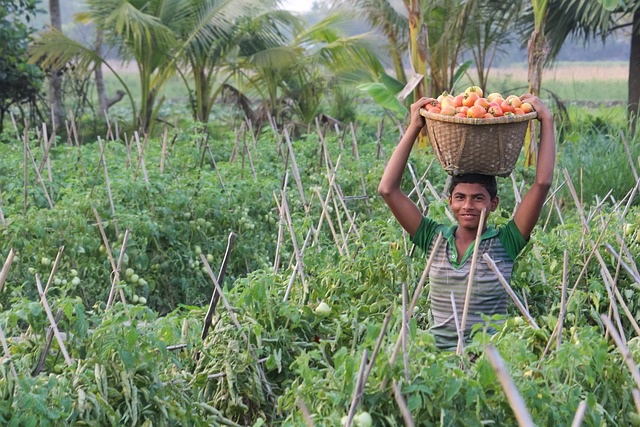

Aenean ornare velit lacus, ac varius enim lorem ullamcorper dolore aliquam.
Araps Ware , SPPI Portal - Selasa 12/08/2024

Pemerintah Daerah Yogyakarta meluncurkan program inovatif bertajuk ‘Smart Farm 2024’ yang bertujuan untuk mentransformasi cara bertani di pedesaan melalui teknologi digital dan automasi.
Instalasi sensor cerdas di lahan pertanian untuk memantau kondisi tanah, kelembapan, suhu, dan kualitas udara secara real-time, yang dapat membantu petani membuat keputusan berbasis data.
Penggunaan drone dan robot untuk pemantauan tanaman, penyiraman otomatis, dan aplikasi pestisida dengan presisi tinggi, mengurangi kebutuhan tenaga kerja manual dan meningkatkan efisiensi.
Program pelatihan bagi petani lokal tentang cara menggunakan teknologi terbaru dan teknik pertanian modern untuk meningkatkan hasil panen dan keberlanjutan.
Pembentukan koperasi digital yang memudahkan petani untuk menjual produk mereka langsung ke konsumen melalui platform e-commerce yang dikelola oleh pemerintah.
 Dengan memanfaatkan teknologi, kami berharap dapat meningkatkan produktivitas, mengurangi kerugian, dan memperkuat ketahanan pangan lokal. Program ini mendapatkan sambutan positif dari berbagai kalangan, termasuk petani, pengusaha teknologi, dan organisasi lingkungan. Beberapa petani yang telah mencoba teknologi ini melaporkan peningkatan hasil panen hingga 30% dan pengurangan penggunaan air sebesar 20%.
Media sosial ramai dengan antusiasme tentang program ini, dengan tagar #SmartFarm2024 menjadi populer. Banyak yang menyanjung inisiatif ini sebagai langkah maju dalam menciptakan pertanian yang lebih efisien dan berkelanjutan.
Dengan peluncuran ‘Smart Farm 2024,’ Yogyakarta berharap dapat menjadi contoh bagi daerah lain di Indonesia dan di seluruh dunia dalam mengintegrasikan teknologi ke dalam sektor pertanian.
Aenean ornare velit lacus, ac varius enim lorem ullamcorper dolore aliquam.

Aenean ornare velit lacus, ac varius enim lorem ullamcorper dolore aliquam.

Aenean ornare velit lacus, ac varius enim lorem ullamcorper dolore aliquam.
Sed varius enim lorem ullamcorper dolore aliquam aenean ornare velit lacus, ac varius enim lorem ullamcorper dolore. Proin sed aliquam facilisis ante interdum. Sed nulla amet lorem feugiat tempus aliquam.